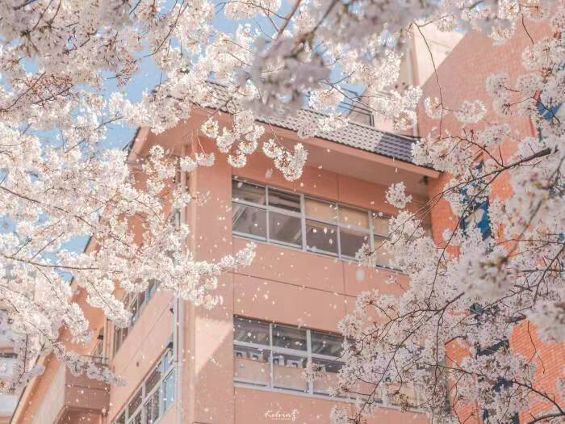
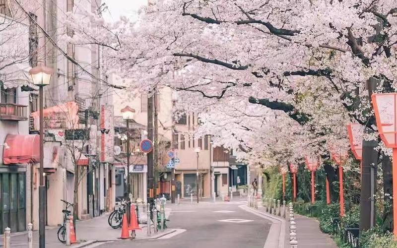

About me? About future me!

真要开始写写自己，发现却无从写起。我了解自己吗？我想是不了解的，像现在这样与自己独处的时间，很少很少。大部分的时间都在忙碌，我也会反复逃避这样的状态，以试图拥有休闲时光。可是不久就要再度投入到忙碌的生活当中去。在生活和学习当中，我总是平衡不了。我想，这可能是要花一辈子的时间去抗衡。
信息大爆炸的时代，想知道想了解的东西太多了，可是理解的东西却更少了。海量的信息下，每个人都变得渺小了起来，我想我的焦虑也来源于此。我经常处于自我堵塞的状态下。我想我需要改变自己的思维了。我不再需要记忆的能力，相反，我需要的是删除的能力。我有不知情权。
其实，最近，我的状态也挺好的。我并没有焦虑。每一天起来也是轻快的，多了些思考，而不是做一个记忆机器。记忆的事情就交给互联网吧。也不知道过段时间再看现在写的东西，是什么感觉，希望可以起个警醒的作用吧。
关于未来的自己，我有很多的话想说，但我却不知道从哪里开始说起。说实话我挺讨厌自己的。每次都早早的立下flag，却从来没有实现过。每年我都会立下年初目标却每次都离目标很远很远，每次都是以失败告终。
我很想改变自己，却不知道从哪里开始。我会想也许是我立下的目标离实际相差太大导致我无法实现，但是我静下心来思考的时候才发现原来我一年里只要坚持一半的时间，甚至不需要一般的时间就可以实现。这让我
很讨厌我自己。我曾经也有段时间很低迷，例如学习，学习就像逆水行舟，不进则退。没有目标的学习生活让我成绩下滑很多。但是我坚信如果自己接着这样下去并不会有什么结果。我虽然没有很大进步，但是我不能气馁
我要进步，可能不快，但是不能停下。成功往往需要经历很多的失败，就像只有雨天才更易出现彩虹一样。xjh，你经常告诉自己：时间会证明一切。是啊！一切都是时间问题，如果你永不言弃的话。加油！遗憾的都不是未来！
父母总有一天会老去，你也会成为一家之主。到时候你需要承担起一个家庭所带来的的压力，你真的准备好了吗？这一天越来越近，即将进入社会的你了解社会的模样嘛？哎呀！xjh不能再颓废了，你虽然不聪明，但是我们都
还没有到需要靠天赋的地步。我相信。再2023年这个新的一年里，你可以多进步一点点。不需要和别人比较，只要每次比自己进步一点点就好了。加油xjh，你很棒，比你自己想象中的要棒很多。有很多人都很看好你，你自己
不能看不起自己，机会也是要考争取的，自信很重要！xjh奥利给！！！
